0달러로 편집한 영상
영상은 결과부터 보여 줘요. 왼쪽 'Raw take'가 손대지 않은 촬영본이고, 오른쪽 'Edited by GLM 5.3 Flash · $0'이 무료 모델이 편집한 결과예요. 오른쪽 아래 타임라인을 보면 자막, 그래픽, 효과음, 음악 트랙이 여러 줄로 쌓여 있어요. 컷만 자른 게 아니라 편집 프로그램에서 하는 작업을 거의 다 했다는 뜻이에요.
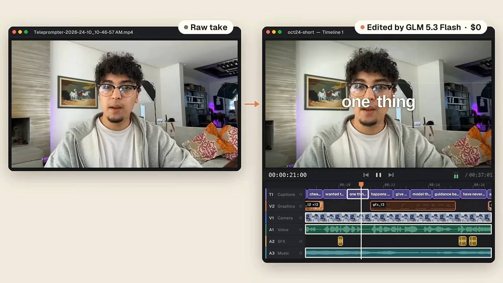
발표자가 말하는 '0달러'는 문자 그대로예요. 아래 여섯 칸에 Claude 구독, ChatGPT, 크레딧, API(Application Programming Interface) 키, 계정, 카드가 모두 금지 표시로 지워져 있어요. 가입도 결제 수단 등록도 하지 않았다는 거예요. 쓴 모델은 GLM-5.3-Flash라는 무료 오픈 모델 하나예요.
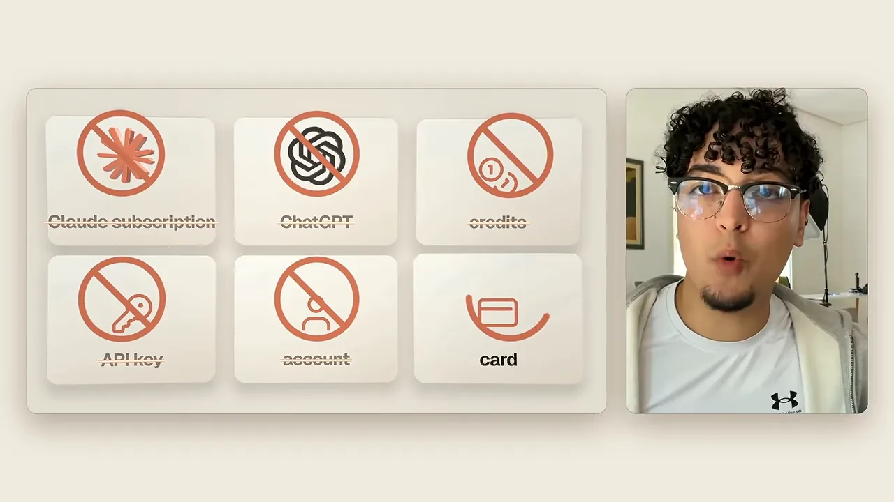
발표자는 오픈 모델을 코드에 쓰는 사람은 봤어도 영상 편집에 쓴 사례는 찾지 못했다고 해요. 그래서 큰 프롬프트도, 몇 시간짜리 프롬프트 다듬기도 없이 자기 스킬과 짧은 지시 한 줄만으로 해 봤다는 거예요.
왜 중요할까요
이유는 돈이에요. 처음 시작할 때는 이 일이 나한테 맞는지도 모르는데, 테스트 한 번, 수정 한 번, 실수 한 번마다 돈이 나가요. 결국 배우려고 돈을 내는 셈이고, 편집자를 쓰는 건 더 비싸요. 그래서 형편이 될 때까지 시작을 미루는 사람이 많다는 게 발표자의 문제의식이에요. 화면에는 Claude 요금표가 뜨는데, Free 0달러, Pro 17달러, Max는 100달러부터예요.
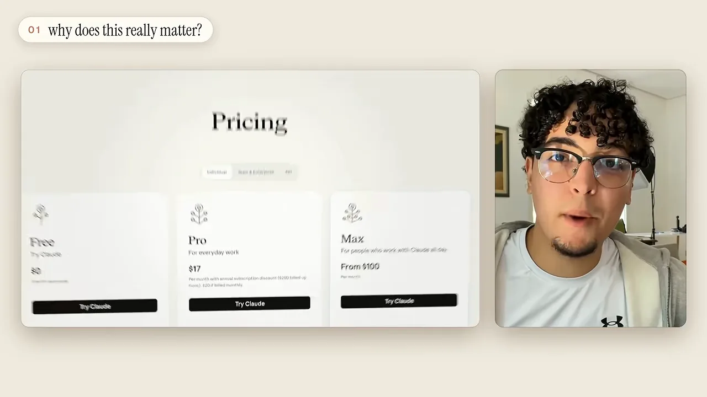
일주일 전엔 왜 안 됐을까요
발표자는 일주일 전만 해도 이게 왜 안 됐는지부터 짚어요. AI(Artificial Intelligence)에게 영상 편집을 맡기려면 대화만 하는 챗봇으로는 부족해요. 화면 가운데 'an agent' 아래 세 칸이 에이전트에게 필요한 능력이에요. 내 파일을 열고, 내 컴퓨터에서 도구를 돌리고, 사람 없이 한 시간 넘게 계속 일하는 거예요.
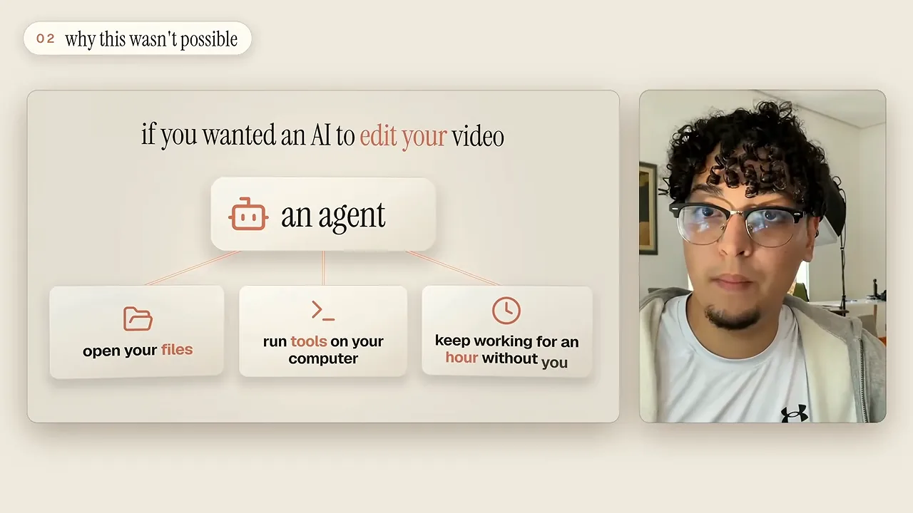
이 세 가지를 갖춘 건 Claude Code 정도였고, 쓰려면 최소 월 20달러 요금제가 필요했어요. 무료 모델도 있긴 했지만 노트북에서 돌릴 만큼 작거나, 편집 전체를 해낼 만큼 똑똑하지 않거나, 오래 일하다 길을 잃었다고 해요. 발표자는 이게 세 가지가 한꺼번에 갖춰지면서 바뀌었다고 설명해요. 아래 그림은 그 세 가지가 각각 무엇을 맡는지 정리한 거예요.
첫째, OpenCode
OpenCode는 Claude Code처럼 터미널에서 도는 AI 에이전트인데 무료 오픈소스예요. 화면은 OpenCode 첫 화면으로, 입력창 아래 'Build · Big Pickle'이 지금 고른 에이전트 모드와 모델이에요.
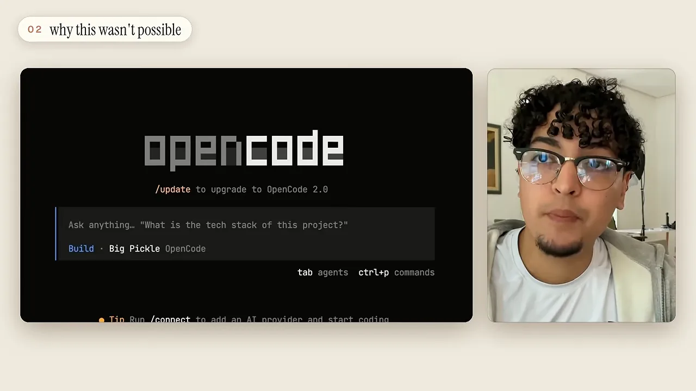
발표자가 놓치기 쉽다고 강조하는 대목은, OpenCode가 Claude Code와 같은 스킬 폴더를 읽는다는 점이에요. 아래 목록은 발표자가 그동안 만든 스킬 폴더들이고, 주황색으로 표시된 live-carousel, motion-carousels, motion-graphics-v2 같은 것들을 OpenCode에서도 다시 만들지 않고 썼다는 거예요.
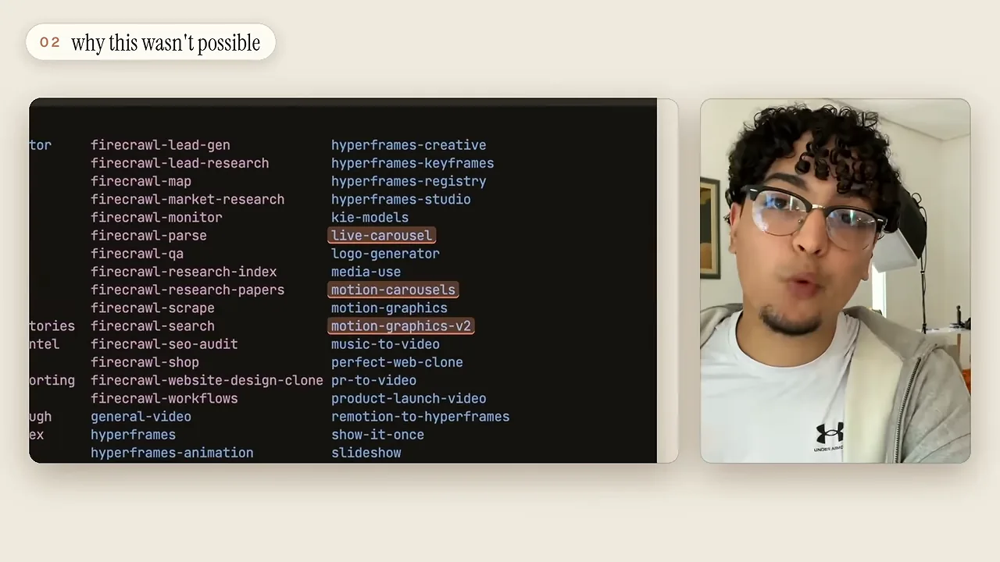
둘째, 그 안에서 무료가 된 큰 모델
10월 16일에 OpenCode가 GLM-5.3-Flash를 무료로 풀었어요. 화면은 Hugging Face 모델 페이지인데, 가운데 'Model size 321B params'와 위쪽 'Downloads last month 6,377,661'이 발표자가 말한 숫자예요. 작은 모델이 아니라는 거죠.
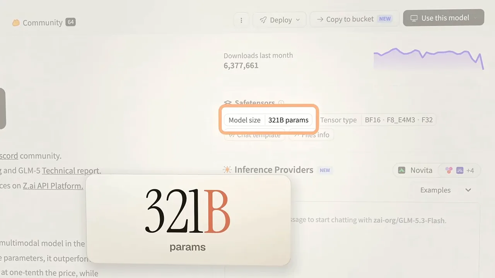
셋째, 스킬
발표자가 진짜 비밀이라고 부르는 건 스킬이에요. 화면의 editor-v1/SKILL.md 아래쪽을 보면 description에 '말하는 사람 촬영본을 EDITOR V1 스타일의 16:9 다큐멘터리풍 영상으로 편집한다'고 적혀 있어요. 이 파일에 편집 시스템이 통째로 들어 있어요. 화면이 얼마나 자주 바뀌는지, 색, 소리, 자막 위치, 그리고 어기면 안 되는 규칙까지요.
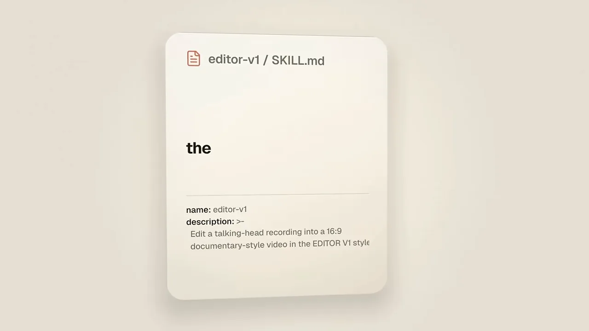
그래서 모델이 천재일 필요가 없어요. 레시피, 즉 가드레일을 따르기만 하면 되니까요. 발표자는 이렇게 단언해요.
Whoever tells you, oh, you need to have a massive prompt ... that's complete BS.
거대한 프롬프트가 있어야 한다고 말하는 사람이 있다면, 완전히 헛소리예요.
— 영상 03:52
어디서 무엇이 돌았나요
발표자는 이 부분을 투명하게 밝혀요. 컷 편집, 전환, 그래픽, 렌더링, 사운드 믹싱은 전부 자기 노트북에서 돌았어요. 두뇌인 모델만 OpenCode 서버에서 무료로 돌았고요. 화면 왼쪽 노트북에 'MacBook Air · 16 GB'가, 위쪽에 '321 billion parameters'와 빨간 X가 있어요. 그 크기의 모델은 이 노트북에 들어가지 않는다는 뜻이에요.
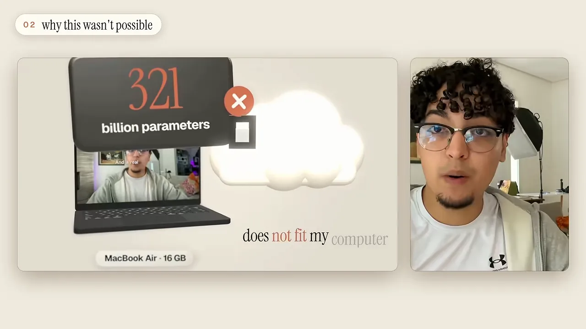
대신 노트북에서 돌리는 작은 오픈 모델도 있어요. 터미널의 ollama list 결과에 qwen3.5:9b(7.6GB)가 보여요. 9B 파라미터 모델로, 와이파이가 없는 비행기 안에서 캐러셀을 만들 때 쓴대요. 편집하기엔 아직 작지만, 오픈 모델이 매달 좋아지니 시간문제라고 봐요.
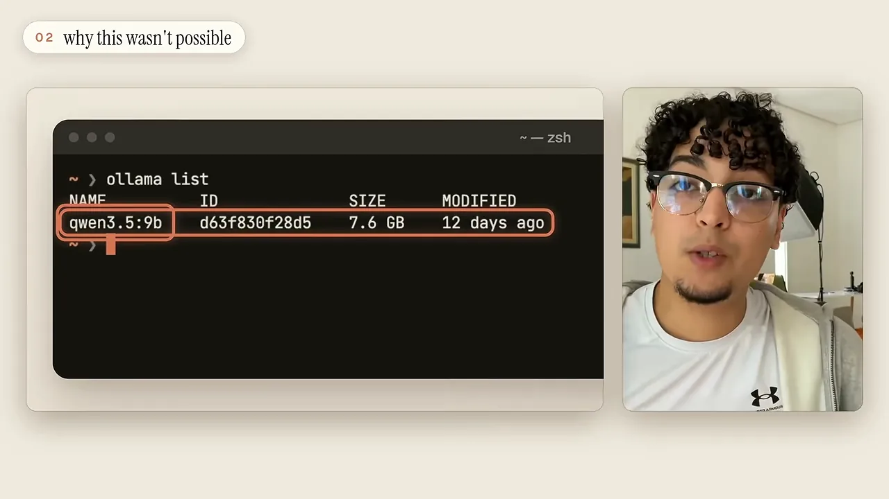
Claude에서 만들고, OpenCode에서 쓰기
발표자는 스킬을 만드는 일과 쓰는 일을 나눠요. 그동안 나눠 준 편집 스킬은 모두 Claude로 만들었어요. 화면 위 'built with Claude' 아래 Editor V1 카드가 그 예예요.
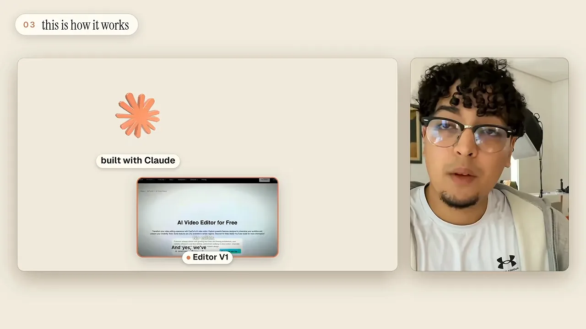
스킬을 만드는 어려운 일은 OpenCode에서 하지 말라고 강하게 권해요. Claude가 훨씬 똑똑하니 거기서 만들고, 완성된 스킬을 OpenCode에서 무료 모델로 쓰면 비용이 안 든다는 거예요. 한번 만들어진 스킬을 따라가는 건 훨씬 쉬워서 무료 모델도 해낼 수 있어요.
어떤 스킬이 무료 모델로 될까요
아래 화면은 발표자가 나눠 준 편집 스킬 네 개예요. 체크 표시가 붙은 화면 공유 편집(screen share editor), 숏폼 편집(short editor), Editor V1은 무료 모델로도 돌아가요. 빨간 X가 붙은 모션 그래픽(motion graphics)만 안 돼요.
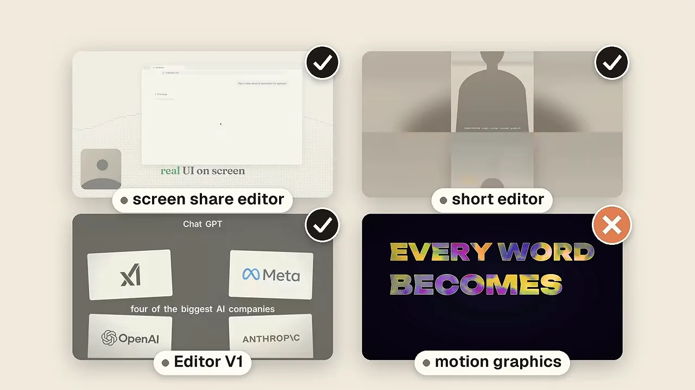
| 편집 스킬 | 무료 모델로 | 영상이 말한 이유 |
|---|---|---|
| 화면 공유 편집 | 돼요 | 스킬을 따라가기만 하면 돼요 |
| 숏폼 편집 | 돼요 | 스킬을 따라가기만 하면 돼요 |
| Editor V1 | 돼요 | 이 영상 첫머리 편집이 그 결과예요 |
| 모션 그래픽 | 안 돼요 | 모든 프레임과 음악을 코드로 짜는 무거운 작업이에요 |
실제로 입력한 건 한 줄
편집할 때 한 일은 영상을 채팅창에 끌어다 놓고 "edit this video with editor v1"이라고 친 게 전부예요. 아래 화면 위쪽이 그 프롬프트이고, 오른쪽 위 'GLM-5.3-Flash Free · max'가 쓴 모델과 강도예요. 아래쪽에 토큰 1,604,496개, 비용 $0.00이 찍혀 있어요.
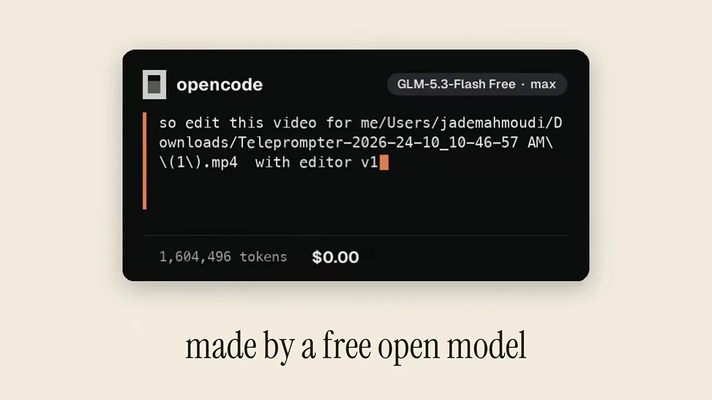
품질은 어떨까요. 발표자는 Opus 5.5만큼 좋지는 않지만 일은 확실히 해낸다고 평가해요.
설치 7단계
Mac과 Windows 둘 다 돼요. Windows에서는 OpenCode가 WSL(Windows Subsystem for Linux)을 쓰라고 권하는데, Windows 안에서 도는 리눅스라고 보면 돼요. 화면은 OpenCode 문서의 Windows (WSL) 항목으로, 'Windows Subsystem for Linux (WSL)'에 표시가 돼 있어요.
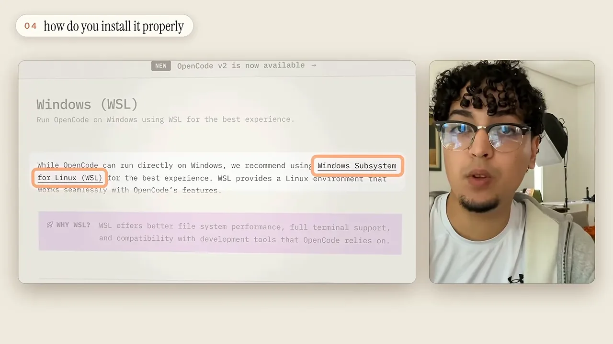
아래는 발표자가 말한 일곱 단계를 순서대로 옮긴 거예요. 단계마다 화면이 붙어 있어요.
- OpenCode를 설치해요 — Mac에서는 Command+Space로 터미널을 열고, opencode.ai의 설치 명령을 붙여 넣어 Enter를 눌러요. 발표자는 자기가 테스트한 버전이라며 설명란의 명령을 그대로 쓰라고 해요. opencode 로고와 'OpenCode includes free models' 안내가 떠요
curl -fsSL https://opencode.ai/install | bash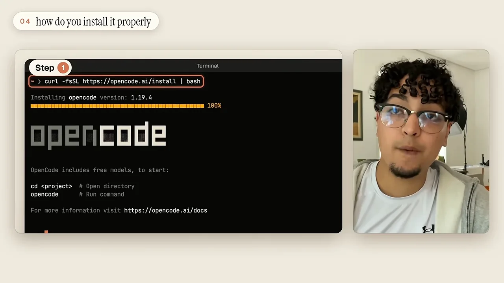
- Editor V1 zip을 받아요 — 발표자 커뮤니티에 올라온 Google Drive에서 받아 다운로드 폴더에 그대로 둬요. 옮기지도, 압축을 풀지도 않아도 설정이 알아서 찾아요.
Drive 폴더에는 zip 말고도 'READ ME FIRST.txt'와 5단계에서 쓸 'SETUP-PROMPT (copy-paste).txt'가 함께 있어요.
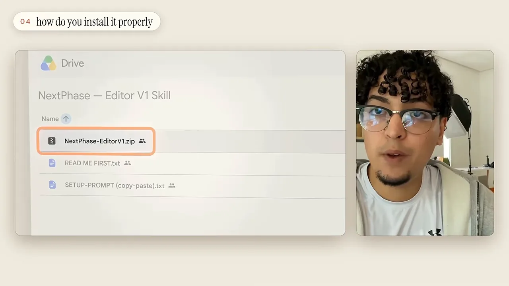
- 터미널을 새로 열고
opencode를 쳐요 — 로그인은 필요 없어요. connect라는 게 보이면 유료 모델용이니 건너뛰어요. - 무료 모델을 고르고 강도를 max로 올려요 —
/models를 치고 free로 검색해 GLM-5.3-Flash Free를 골라요. 그다음 Ctrl+T를 눌러 max가 보일 때까지 계속 눌러요.
모델 선택 창에서 free로 검색하면 무료 모델이 일곱 개 떠요. Flint 40B, Nemotron 3.5 Super VL(Vision-Language), Beam, MiMo-V2.6-Flash, DeepSeek V4.1 Flash, GLM-5.3-Flash, Nemotron 3.5 Lightning이에요. 이 중 아래에서 두 번째 GLM-5.3-Flash Free를 골라요.
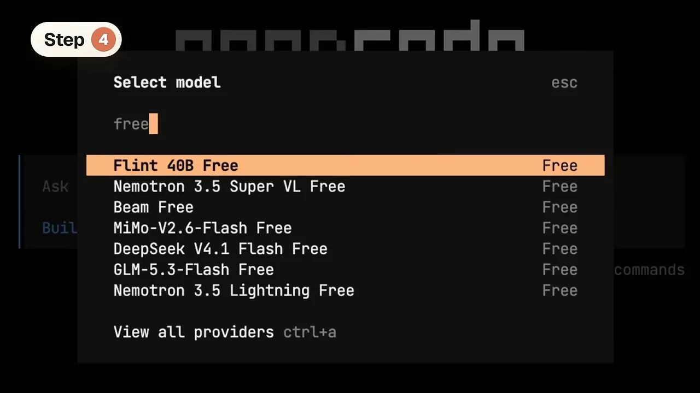
모델을 고른 뒤에는 입력창 아래 줄을 확인해요. 'Build · GLM-5.3-Flash Free OpenCode' 옆에 주황색 'max'가 붙어 있으면 된 거예요. 편집은 큰 작업이라 발표자는 max로 돌렸어요.
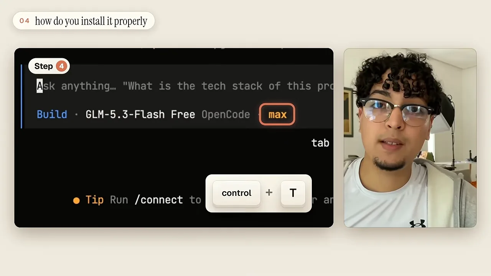
- 설정 프롬프트를 붙여 넣어요 — Drive의 설정 프롬프트를 통째로 복사해 OpenCode에 붙여 넣고 Enter를 눌러요. 7초짜리 테스트 영상이 만들어지면 설치가 끝난 거예요
프롬프트 첫 줄에 'Claude Code skill'이라고 적혀 있어요. 발표자는 신경 쓰지 말라고 해요. OpenCode가 같은 폴더를 읽기 때문이에요. 그 아래 '1. FIND IT'부터는 다운로드 폴더나 바탕화면에서 zip을 찾고, 압축 안에 또 압축이 있으면 SKILL.md가 나올 때까지 풀라는 지시예요.
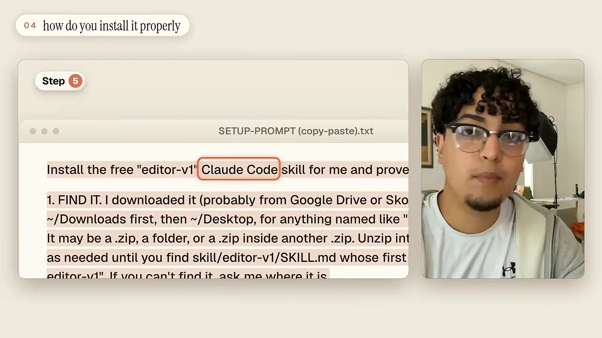
스킬을 깐 다음에는 편집에 필요한 무료 도구를 설치해요. 화면의 네 칸이 FFmpeg, Python, 영상 렌더러, 그리고 목소리를 알아듣는 음성 인식 모델이에요. 빠진 게 있으면 알려 주고, 비밀번호가 필요한 일 전에는 먼저 물어봐요.
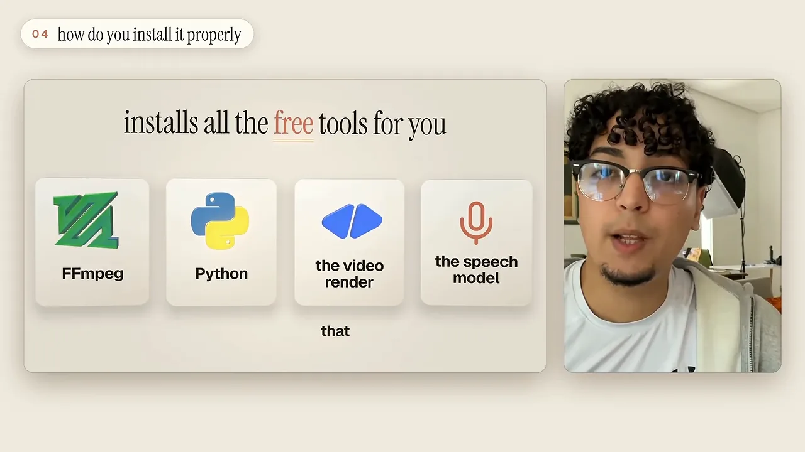
중간에 딱 한 번 질문을 해요. 컷아웃 효과를 쓸지 묻는 거예요. 사람 뒤로 배경이 바뀌고 머리 뒤에 큰 글자가 깔리는 효과예요. 화면의 안내문에는 PyTorch가 필요하고 약 1GB를 한 번 내려받는다고 적혀 있어요. 오른쪽 'preview.mp4 · 7s'가 마지막에 만드는 테스트 영상이에요.
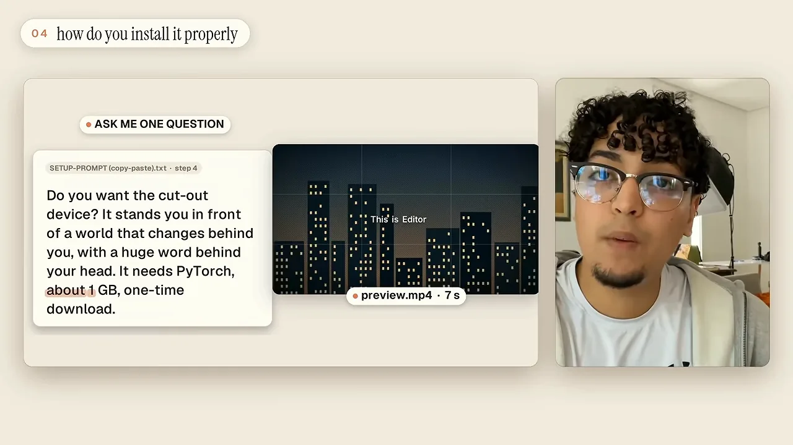
/new로 새 세션을 열어요 — 스킬을 다시 불러오기 위해서예요.- 영상을 끌어다 놓고 한 줄로 시켜요 — "edit this video with editor v1"이라고 치고 Enter를 눌러요. 끝났다고 하면 "open it for me"라고 답하고, 보면서 메모를 줘요. 메모를 줄수록 결과가 좋아진대요.
영상 파일을 터미널에 끌어다 놓으면 입력창에 파일 경로가 들어가요. 화면에서 경로 아래 'GLM-5.3-Flash Free OpenCode · max'가 그대로인지 한 번 더 확인할 수 있어요.
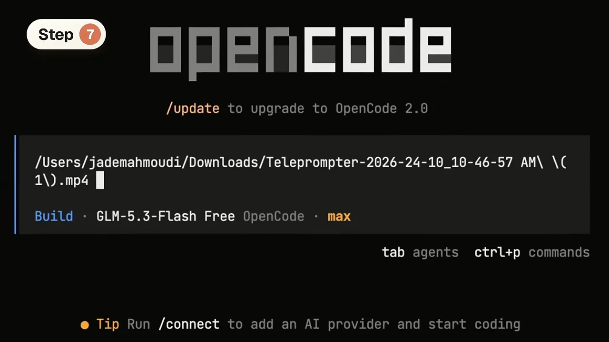
처음 쓸 때 팁 세 가지
마지막으로 발표자가 직접 써 보며 얻은 팁 세 가지예요.
- 짧게 시작해요 — 발표자가 편집한 영상은 38초였어요. 첫 시도부터 20분짜리 영상을 넣지 말래요.
- 수정 요청은 시간으로 적어요 — 몇 초 지점인지 분명하게 써야 해요.
- 시작 전에 얼마나 걸릴지 물어봐요 — 편집 프롬프트를 보내기 전에 물으면 미리 알려 줘요.
두 번째 팁은 화면이 보여 줘요. 체크 표시가 붙은 'at second five'처럼 쓰는 게 맞고, X 표시가 붙은 표현은 피하래요. 아래 'Real message · OpenCode'는 발표자가 실제로 보낸 메시지로, 'the second 5'처럼 애매하게 썼더니 잘 알아듣지 못했다는 예예요.
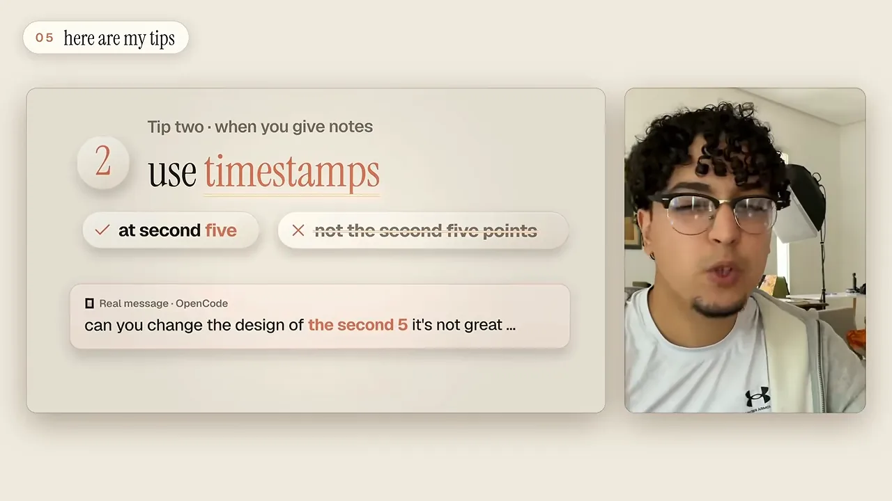
발표자의 결론은, 돈 때문에 콘텐츠를 망설였다면 지금이 시작하기 좋은 때라는 거예요. 무료 오픈 모델은 앞으로 더 좋아질 테니까요.